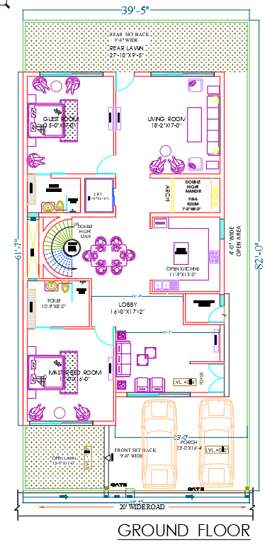
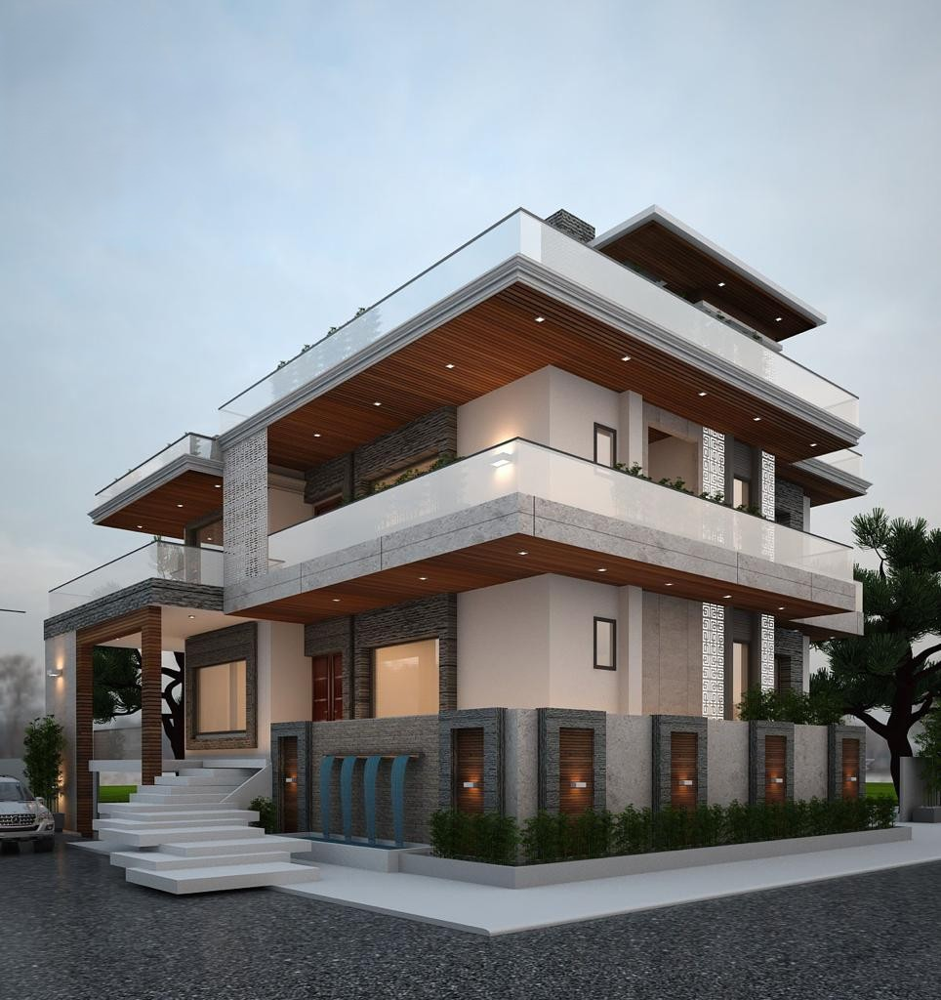
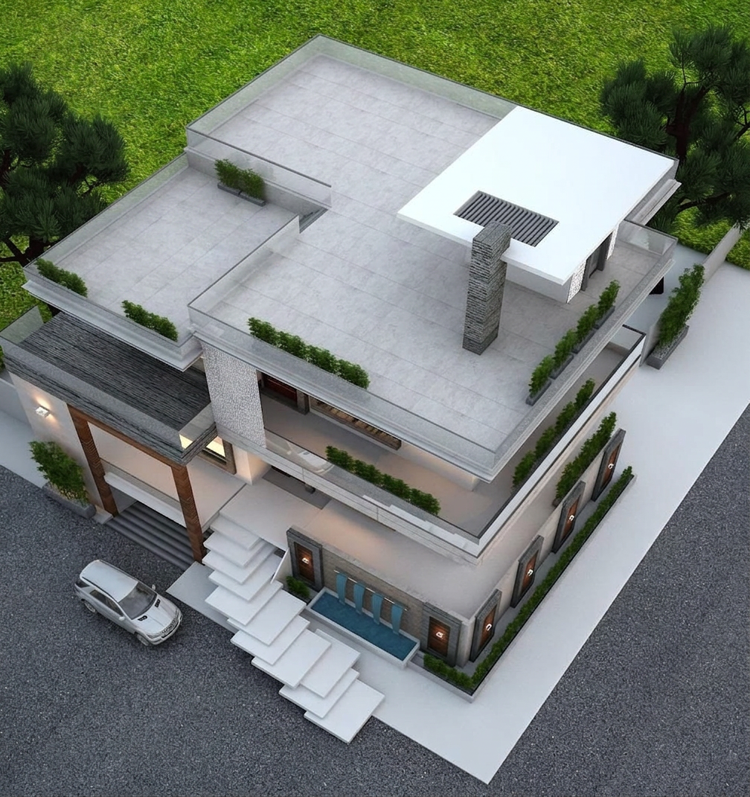

? All Projects
The Courtyard Terrace House
A Dehradun residence composed as layered terraces - grey stone, white planes, warm timber ceilings, glass edges and planted roof decks working as one calm family home.
The Brief
Layered Terraces
For Dehradun Living
The project reads as a contemporary hillside-family home translated for the urban edge of Dehradun. Its strongest move is the stacking of broad horizontal slabs that shade the rooms below while creating usable terraces above.
The facade balances cool grey stone with crisp white walls and warm timber soffits. Glass railings keep the terraces visually light, while patterned jaali panels add privacy, ventilation and a crafted Indian texture to the otherwise clean modern massing.
At street level, the raised entry stair, stone boundary wall, planter beds and slim water feature make the house feel grounded before it opens upward into balconies, roof gardens and shaded outdoor rooms.
"The house is modern, but not cold. Stone gives it weight, timber gives it warmth, and the terraces give the family daily contact with the sky."

Chapter 02
From First Sketch
to Final Form
The massing starts with three simple moves: lift the living level above the street, wrap it with shaded balconies, then reserve the roof as a private garden terrace for Dehradun's mild evenings.
Chapter 03
Materials Chosen
with Intention
Granite Stone
Used on the boundary, feature walls and vertical masses to give the residence a durable, grounded base with a natural speckled finish.
Palette: natural granite stone
Clear Glass Balustrades
Transparent railings lighten the heavy slab edges and keep balconies, roof terraces and planting visually connected to the street and sky.
Use: balconies and terrace edges
Warm Timber Soffits
Linear wood-finish ceilings under the cantilevered slabs bring warmth, soften evening light and make the large overhangs feel crafted.
Use: porch, balconies and roof canopy
Chapter 04
Three Views of the Residence
The available views show the house from the street, the corner and the roof. Together they explain the building's main architectural idea: a solid stone base carrying lighter, planted terraces above.

Corner View
Roof Terrace
Street View
Additional View
Additional View
Chapter 04A
Design to Reality
A comparison of the concept vision and the built outcome for this residential project.
Chapter 05
Design Reading
The residence is deliberately horizontal: each floor projects outward to shade the one below, creating deep verandah-like edges without losing a contemporary profile. The patterned jaali panels break the scale of the front elevation, while the stone base, low planter beds and water feature keep the building visually anchored to the street.